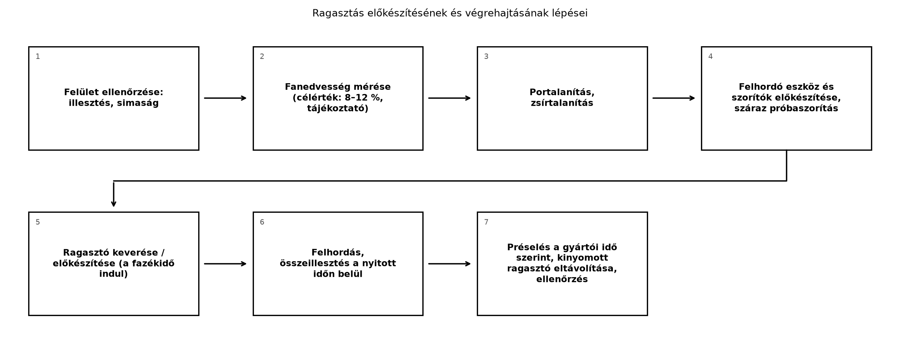

26.2 A ragasztandó felület és a
ragasztóanyag előkészítése, a ragasztás eszközei
Képzeld el, hogy egy tölgyfa asztallapot ragasztasz szélesítő
toldással. A deszkákat szépen összegyaluztad, a ragasztó is ott van, de
a felület poros, és a fa nedvességtartalmát senki nem mérte meg. Ha így
préseled össze, a kötés lehet, hogy megfog, de néhány hét múlva, a
fűtött lakásban megnyílik a ragasztóhézag. Miért? A ragasztó csak akkor
tud tartós kötést adni, ha a fa nedvessége, a felület tisztasága és az
illesztés pontossága együtt megfelelő.
A ragasztási munka nagy része nem a préselés, hanem az
előkészítés. Ha ez kimarad, a legjobb ragasztó sem
segít. Az alábbi folyamatábra a ragasztás előtti helyes sorrendet
mutatja.

Ragasztás előkészítésének és
végrehajtásának lépései - A szorítókat, a felhordó eszközt és a száraz
próbaszorítást a ragasztó bekeverése ELŐTT készítjük elő, mert
kétkomponensű ragasztónál a fazékidő a keveréssel indul. A gyártói
adatlap ettől eltérhet (ellenőrizendő).
Az ábrán az is látható, hogy a ragasztóanyag bekeverése előtt először
a faanyag oldalát kell rendbe tenni, és a szorítókat, a felhordó eszközt
is elő kell készíteni egy ragasztó nélküli próbaszorítással – a
bekeverés után már a fazékidő fogy. A ragasztó és a fa találkozásának
minőségén múlik minden.
26.2.1 A ragasztandó felület
előkészítése
Definíció. A ragasztandó felület az
a faanyagfelület, amelyet közvetlenül ragasztóval kenünk be, és amely a
másik alkatrészhez vagy réteghez kapcsolódik. A felület előkészítése azt
jelenti, hogy a fát nedvesség, tisztaság, síkbeliség és érdesség
szempontjából alkalmassá tesszük a ragasztó befogadására.
A fa ragasztásakor a ragasztó nem „folyik bele” mélyen a fába, hanem
a felület közeli sejtekben és a határrétegben alakít ki tapadást. Ezért
a felületnek jól hozzáférhetőnek, tisztának és megfelelő nedvességűnek
kell lennie. A kritikus pontok:
Fanedvesség. A ragasztandó fa nedvességtartalmának
a későbbi használati környezethez kell közelítenie. Tömörfa
ragasztásához általában 8–12 % közötti fanedvesség
ajánlott beltéri bútoroknál (ellenőrizendő: a konkrét érték a termék és
a ragasztó gyártói adatlapjától, valamint a beépítési környezet
egyensúlyi fanedvességétől függ). Ha a fa túl nedves, a ragasztó
lassabban köt, a későbbi zsugorodás pedig feszültséget ébreszt a
kötésben. Ha túl száraz, a fa gyorsan „elszívja” a ragasztó vizét, és a
ragasztófilm nem tud megfelelően elterülni.
Frissen gyalult vagy csiszolt felület. A gyalult
vagy frissen csiszolt felület tiszta és nyitott pórusú, ezért jobban
nedvesíthető, mint a régi, oxidált vagy elszennyeződött felület. Fa
ragasztásánál a megmunkálás után közvetlenül, legfeljebb néhány órán
belül érdemes ragasztani; a túl sokáig álló, „fáradt” felületet újra le
kell gyalulni vagy csiszolni. A csiszolásnál ne használj túl finom,
polírozó szemcsét (pl. P400 felett), mert a felület „bezárulhat”, és a
ragasztó kevésbé tud kapcsolódni (ellenőrizendő: a ragasztógyártó
ajánlása szerint).
Por- és zsírmentesség. A felületről el kell
távolítani a fűrészport, csiszolóport, gyantát, olajat, viaszt,
kéznyomokat, jelölőceruza nyomait. A port sűrített levegővel,
porszívóval vagy tiszta, száraz ecsettel lehet eltávolítani. Zsíros,
olajos szennyeződést oldószeres, tiszta ronggyal kell letörölni (pl.
aceton vagy hígító, a ragasztógyártó ajánlása szerint – ellenőrizendő).
A rongyból ne kerüljön szösz a felületre.
Olajos trópusi fák. Egyes trópusi fafajok (pl.
teak, iroko, afzélia) természetes olajokat, gyantákat tartalmaznak. Ezek
a felületen vékony, vizes ragasztót taszító réteget képezhetnek.
Ilyenkor a ragasztás előtt közvetlenül a felületet oldószerrel le kell
törölni, majd frissen csiszolni vagy gyalulni, és a ragasztót rögtön
felhordani. Az olajos fákhoz a PUR vagy epoxi ragasztó jobban tapadhat,
de mindig a gyártói adatlap szerint válasszunk.
26.2.2 A ragasztóanyag
előkészítése
Definíció. A ragasztóanyag előkészítése az a
műveletsor, amelynek során a ragasztót – szükség szerint hígítva,
megfelelő hőmérsékletre hozva, többkomponensű ragasztó esetén a megadott
arányban összekeverve – felhordásra alkalmassá tesszük.
A ragasztókat mindig a gyártói adatlap szerint kell
előkészíteni. A következő szempontok minden ragasztónál fontosak:
Hígítás. Vizes bázisú ragasztókat (PVAc,
diszperziós ragasztó, karbamid- és melaminragasztók) általában vízzel
lehet hígítani, de a hígítás csökkenti a szárazanyag-tartalmat és a
kötési szilárdságot. Csak annyi vizet adj hozzá, amennyit a gyártó
megenged, és a felhordás módjához igazítva. Oldószeres ragasztókhoz a
megjelölt oldószer vagy hígító használható.
Keverés. Ülepítő, többfázisú ragasztókat
felhasználás előtt alaposan fel kell keverni, hogy az anyag egynemű
legyen. Kézi keverőpálcával vagy lassú fordulatú keverőfejjel dolgozz,
ne keverj levegőt a ragasztóba.
Edző (térhálósító). A kétkomponensű ragasztóknál
(pl. PVAc + edző, poliuretán, epoxi, rezorcin-formaldehid) a
komponenseket a gyártó által megadott tömeg- vagy térfogatarányban kell
összekeverni. A keverési arányt pontosan be kell tartani: ha kevesebb az
edző, a kötés lágy marad; ha több, a kötés rideg lehet, és a fazékidő is
lerövidül.
Fazékidő. A fazékidő az az
időtartam, amíg a bekevert ragasztó felhordható marad. A fazékidő függ a
ragasztó típusától, a keverési aránytól és a hőmérséklettől: magasabb
hőmérsékleten a fazékidő rövidül. Mindig csak annyi ragasztót keverj be,
amennyit a fazékidőn belül fel tudsz hordani.
Hőmérséklet. A ragasztó és a fa hőmérséklete
befolyásolja a bekeverhetőséget, a felhordást és a kötési időt. Ne
használd a ragasztót a gyártó által megadott legalacsonyabb feldolgozási
hőmérséklet alatt (PVAc-nál ez jellemzően kb. +5…+10 °C, ellenőrizendő),
mert sűrű lesz, rosszul terül, és a kötés is lelassul. A ragasztót, a
fát és a műhely levegőjét is a gyártó által megadott hőmérsékleti
tartományba kell hozni. A meleg ragasztó (pl. 20–25 °C) könnyebben
terül, és a kötési idő rövidebb lehet (ellenőrizendő).
Példa. Egy kétkomponensű PVAc ragasztó keverési
aránya 100 tömegrész gyanta : 20 tömegrész edző. Ha 450 g gyantát mérsz
ki, mennyi edzőt kell hozzáadnod, és mennyi lesz a kész keverék?
A számítás menete: az arány 5:1, tehát 450 g gyantához 450 / 5 = 90 g
edző tartozik. Az összes keverék 450 g + 90 g = 540 g. Ellenőrzés: 90 g
/ 450 g = 0,2, azaz 20 %.
26.2.3 A ragasztás szerszámai és
eszközei
A felhordóeszközt a ragasztó fajtája, a felület nagysága és a
ragasztóhézag alakja szerint választjuk ki. A leggyakoribb kézi
eszközök:
Ecset. Kisebb felületekhez, sarkokhoz, csapok és
fészkek kenésére alkalmas. Vizes ragasztóhoz műanyag sörtéjű vagy
lakkecset használható; oldószeres ragasztóhoz oldószerálló ecset kell.
Az ecsetet használat után azonnal ki kell mosni a gyártó szerinti
oldószerrel vagy vízzel.
Spatula. Vékony, hajlékony acéllapocska. Tömörfa
ragasztásánál a ragasztó egyenletes eloszlatására, kis felületek
kenésére alkalmas. A fogazott spatula (lásd lejjebb) a vastagabb
ragasztóréteg kialakításához kell.
Fogas lehúzó (fogazott spatula). Lapragasztáshoz,
furnérozáshoz és rétegelt lemezekhez használják. A fogak mérete
határozza meg a felhordott ragasztómennyiséget (pl. 1,5 mm-es fog,
ellenőrizendő: a ragasztógyártó ajánlása szerint). A fogakkal
egyenletes, bordázott ragasztófilmet lehet kialakítani, amely a préselés
alatt jól elterül.
Henger (ragasztóhenger). Nagyobb, sík felületek
(pl. lapragasztás, furnérfelhordás) gyors, egyenletes kenésére alkalmas.
A hengert a ragasztó típusához kell választani, és használat után
tisztán kell tartani.
Ragasztópisztoly. Patronos vagy töltött, hőre
olvadó ragasztóhoz (hotmelt) és egyes egykomponensű ragasztókhoz
használható. Kétkomponensű ragasztóhoz keverőfejes pisztolyt is
alkalmaznak, amely a két komponenst a keverőcsőben egyesíti. A
pisztolynál mindig a gyártó által megadott hőmérsékletet és előtolási
sebességet kell beállítani.
26.2.4 Kézi szorítóeszközök
A ragasztott kötést préselés közben rögzíteni kell, amíg a ragasztó
eléri a megfelelő kezdeti szilárdságot. A szorítóeszköz kiválasztása a
munkadarab méretétől, alakjától és a szükséges présnyomástól függ.
Pillanatszorító (gyorsszorító, egykezes szorító).
Gyors, kis és közepes alkatrészek rögzítésére alkalmas. Karral vagy
rugóval szorít. Beállítása pillanatok alatt elvégezhető, de a szorítóerő
kisebb, mint a csavaros szorítónál.
Csavaros szorító (fa- vagy fémszorító, asztalos
satu). Erős, állítható, nagy szorítóerőt ad. A pofák közé puha
alátétet (pl. faléc, gumi) kell tenni, hogy ne nyomja be a fa felületét.
A szorítóerő a csavarorsóval egyenletesen adagolható.
Keretszorító. Négy sarokelemmel vagy
keretszerkezettel a keret alkatrészeit derékszögben, egyidejűleg
szorítja össze. Ajtó- és ablakkeretek, keretbetétek ragasztásához
nélkülözhetetlen. A szorító felállításakor a keret átlóit is ellenőrizni
kell, hogy a szerkezet ne torzuljon.
Szalagszorító. Különböző, akár szabálytalan alakú
alkatrészek körbefogására, kör vagy íves keretek, sokszögű szerkezetek
rögzítésére használják. A heveder vagy szalag egyenletes nyomást ad, de
a szorítóerő kisebb, mint a csavaros szorítóké.
Statikus változat (mint a PDF-ben)
A kézi szorítóeszközök (A) és a ragasztófelhordó eszközök
(B) a fejezet neveivel; (C) helyes szorítás alátétlécekkel, a kötés
vonalában, és hibás szorítás alátét nélkül, ferdén. Sematikus
vonalrajz.
A szorítókat úgy kell elhelyezni, hogy a présnyomás a ragasztóhézagra
merőlegesen hasson. A túl erős szorítás kinyomhatja a ragasztót a
hézagból, ami úgynevezett „éhes kötéshez” vezet; a túl gyenge szorítás
nem zárja a hézagot. A présnyomás tájékoztató értéke puhafához és PVAc
ragasztóhoz kb. 0,2–0,5 N/mm² (ellenőrizendő: a ragasztógyártó és a
munkadarab anyagától függően). A szorítás idejét a ragasztó adatlapja
adja meg.
26.2.5 Munkahely-előkészítés és
biztonság
Szabály. A ragasztási munkához tiszta, sík, jól
megvilágított munkaasztalra van szükség. A munkafelületről a port,
forgácsot, régi ragasztócseppeket el kell távolítani, mert a frissen
kent ragasztóba kerülve hibát okoznak. A helyiség hőmérséklete és
szellőzése legyen megfelelő a ragasztógyártó előírása szerint.
Egészségvédelem. A ragasztók vegyi anyagok, ezért
mindig olvasd el a biztonsági adatlapot és a
műszaki adatlapot. A leggyakoribb
védőfelszerelések:
Bőrvédelem: oldószeres vagy allergén ragasztóknál
oldószerálló kesztyű (pl. nitril), PVAc-nál is ajánlott a
kézvédelem.
Szemvédelem: védőszemüveg, különösen keverésnél és
szórásnál.
Légzésvédelem: oldószergőzöknél vagy poros
csiszolásnál légzésvédő (FFP2/FFP3, a kockázattól függően –
ellenőrizendő).
Szellőzés: oldószeres ragasztókat csak jól szellőző
helyen, elszívás mellett használj.
Tűzvédelem: oldószeres ragasztók gyúlékonyak
lehetnek, ezért tilos nyílt láng, szikra és dohányzás közelében
dolgozni.
Tilos. Ragasztót, edzőt, oldószert lefolyóba önteni,
vagy maradékát összegyűrve, rosszul szellőző helyen tárolni. A
felhasznált ragasztós rongyokat, edényeket a biztonsági adatlap szerint
kell kezelni.
26.2.6 Technológiai lap
Cél: két tölgyfa alkatrész szélesbítő toldásának
ragasztása PVAc D3-as ragasztóval (ellenőrizendő: a D3 osztály beltéri,
időszakosan nedves környezetre utal; a gyártói adatlap a mérvadó).
Anyagok, szerszámok, eszközök:
tölgyfa léc 2 db, kész méret: 900 mm × 80 mm × 20 mm
D3 PVAc ragasztó, egykomponensű
nedvességmérő, tolómérő, derékszög, acélvonalzó
ragasztóadagoló flakon vagy keskeny henger, tiszta rongy
3 db csavaros szorító, alátét falécek (a szorítófej ne nyomja be a
tölgyet)
védőkesztyű, védőszemüveg
Biztonság. A művelet kézi, nem gépi, de a
ragasztóval való érintkezés bőr- és szemirritációt okozhat. Használj
védőkesztyűt és védőszemüveget, szellőztess, és tartsd kéznél a
biztonsági adatlapot. Tilos a ragasztót étellel-itallal együtt tárolni.
Szorításkor alátétlécet használj, és a lapot tartsd síkban, hogy ne
vetemedjen.
Lépések:
Ellenőrizd a nedvességtartalmat. A fa nedvessége legyen 8–12 %
között (tájékoztató célérték). – ellenőrzés: a nedvességmérő értéke a
cél tartományban van.
Ellenőrizd az illesztést. Helyezd a két alkatrészt egymás mellé; a
hézag legfeljebb 0,2 mm lehet egyenletesen (tájékoztató). – ellenőrzés:
fényhézag szemrevételezése vagy 0,1 mm-es hézagmérő lemezzel.
Tisztítsd meg a felületet. Távolítsd el a port és a zsíros
kéznyomokat száraz ronggyal vagy enyhén acetonos ronggyal
(ellenőrizendő). – ellenőrzés: tiszta, matt, pormentes felület.
Készítsd elő a ragasztót. Egykomponensű ragasztó esetén alaposan
keverd fel. – ellenőrzés: a ragasztó egynemű, nincs leülepedett
réteg.
Válaszd ki a felhordó eszközt. Élragasztáshoz ragasztóadagoló
flakont vagy keskeny hengert használj. – ellenőrzés: az eszköz tiszta,
nincs rajta megszáradt ragasztó.
Hordd fel a ragasztót a két felület egyikére. A flakonból vékony
csíkban adagold, majd a keskeny hengerrel egyenletes rétegbe simítsd; a
széleknél ne legyen vastag felrakódás. – ellenőrzés: a réteg egyenletes,
a felület kb. 90–100 %-ban fedve van.
Illeszd össze a léceket, helyezd fel a 3 szorítót váltakozva
alul–felül, alátétlécekkel; húzd meg egyenletesen, amíg a hézag mentén
folyamatos, vékony ragasztókibuggyanás látszik. – ellenőrzés: a lap sík
(acélvonalzó), az illesztés zárt.
A préselési időt a gyártói adatlap szerint tartsd be; a kinyomott
ragasztót félig megkötve vésővel vagy spatulával távolítsd el. –
ellenőrzés: a szorítók levétele után a hézag zárt.
A teljes lépéssort a következő táblázat foglalja össze.
Sorszám
Művelet
Eszköz
Ellenőrzés
1
Nedvességmérés
nedvességmérő
8–12 % (tájékoztató)
2
Illesztés ellenőrzése
hézagoló vagy fényhézag
≤0,2 mm
3
Tisztítás
rongy, oldószer (engedélyezett)
por- és zsírmentes
4
Ragasztó keverése
keverőpálca
egynemű anyag
5
Felhordóeszköz kiválasztása
ragasztóadagoló flakon, keskeny henger
tiszta eszköz
6
Ragasztó felhordása
flakon, keskeny henger
egyenletes réteg
7
Összeillesztés, szorítás
csavaros szorítók
egyenletes hézag, derékszög
8
Préselés ideje, majd kinyomott ragasztó eltávolítása
óra
gyártói idő betartása
26.2.7 Minőségellenőrzés
Mit ellenőrzünk? A ragasztási előkészítés után, a
préselés előtt az alábbiakat kell ellenőrizni:
Illesztés: a két csatlakozó felület síkban van, a
hézag ≤0,2 mm, az élek derékszögűek.
Tisztaság: por, zsír, olaj nincs a felületen.
Ragasztó állapota: a keverési arány a gyártói
előírás szerinti; a ragasztó hőmérséklete megfelelő; a fazékidő még nem
járt le.
Felhordás: a ragasztóréteg egyenletes, a széleknél
nem vastagodik fel, a felületfedés megfelelő.
Szorítás: a szorítóeszközök a ragasztóhézagra
merőlegesen állnak; a szorítóerő egyenletes; a présnyomás a gyártói
tartományban van.
Ha bármelyik pont eltér, a préselést ne kezdd el; javítsd az eltérést
(pl. szárítás, tisztítás, újra keverés, szorító áthelyezés).
26.2.8 Tipikus hibák és okaik
A ragasztóhézag a préselés után nyitva marad. Ok: a
felület nem volt sík, vagy a szorítóerő túl kicsi volt, esetleg a
ragasztó túl sűrű volt. Helyes gyakorlat: az illesztést előzetesen
próbanyomással, ragasztó nélkül ellenőrizd; állítsd be a szorítókat, és
a ragasztót a gyártói állag szerint készítsd elő.
A préselés után alig látható ragasztó, a kötés mégis
gyenge. Ok: túl erős szorítás kinyomta a ragasztót a hézagból
(„éhes (ragasztószegény) kötés”), vagy a felület poros volt. Helyes
gyakorlat: csak mérsékelt présnyomást alkalmazz, a ragasztót fogas
lehúzóval, a gyártói mennyiségben hordd fel, és a felületet tisztán
tartsd.
A kevert kétkomponensű ragasztó hamar besűrűsödik, nem lehet
felhordni. Ok: túl magas műhelyhőmérséklet, túl nagy bekevert
mennyiség vagy a rossz keverési arány. Helyes gyakorlat: kis adagot
keverj, figyeld a fazékidőt, és tartsd a ragasztót a gyártó által
megadott hőmérsékleten.
A ragasztás után a fa vetemedik, a hézag megnyílik.
Ok: a fa nedvességtartalma túl magas volt, és a beépítés után száradt.
Helyes gyakorlat: a ragasztás előtt mérd meg a nedvességet, és a fát a
későbbi helyiség klímájához igazítsd.
A trópusi fa ragasztása nem fogja meg a felületet.
Ok: olajos, gyantás felület és vizes ragasztó együttese. Helyes
gyakorlat: oldószeres tisztítás, friss felület kialakítása, szükség
esetén PUR vagy epoxi ragasztó választása a gyártói ajánlás
szerint.
26.2.9 Valós életbeli
alkalmazás
Egy asztalosműhelyben tölgyfa asztallapot ragasztottak szélesbítő
toldással. A ragasztás után a lap szép lett, de a lakásban, a fűtési
szezonban az egyik ragasztóhézag hajszálvékonyan megnyílt. A műhelyben
újra mérték a fa nedvességtartalmát: a ragasztáskor 14 % volt, mert a
deszkákat nem akklimatizálták a fűtött helyiséghez. A vevő reklamációja
miatt a lapot újra kellett készíteni. A tanulság: minden ragasztás előtt
mérni kell a fanedvességet, és a faanyagot a későbbi beépítési
környezetnek megfelelő egyensúlyi nedvességre kell hozni. A
nedvességmérő és a türelem olcsóbb, mint a selejt.
26.2.10 Önellenőrzés
Mi a fazékidő, és miért fontos?
Miért kell a ragasztandó fafelületet frissen gyalulni vagy
csiszolni?
Milyen célérték a fanedvesség beltéri tömörfa ragasztásánál?
(tájékoztató, ellenőrizendő)
Mit jelent a 100 : 20 keverési arány, és hány gramm edző kell 800 g
gyantához?
Miért tilos a ragasztóhézagot túl erősen összepréselni?
Melyik szorítót választod keretszerkezet ragasztásához, és
miért?
26.2.11 Feladatok
1. feladat (A) Magyarázd meg, mi a különbség a
fazékidő és a nyitott idő között, és mi történik, ha a fazékidő
lejár.
2. feladat (A) Számítsd ki, mennyi edzőt kell adni
300 g gyantához, ha a keverési arány 100 : 25 tömegrész.
3. feladat (B) Egy 1200 mm × 150 mm-es lapfelületre
egyoldali PVAc ragasztófelhordást tervezel. A fajlagos felhordás 180
g/m². Mennyi ragasztóra van szükség, ha 10 % anyagveszteséggel is
számolsz?
4. feladat (B) Válaszd ki a megfelelő szorítóeszközt
egy 600 mm × 400 mm-es keret ragasztásához, és indokold a választásodat.
Milyen ellenőrzést végzel a préselés előtt?
5. feladat (C) Egy teakfa alkatrészt PVAc
ragasztóval próbálnak ragasztani, de a próbadarabon a kötés nem fog. Mi
lehet az ok, és milyen lépésekkel javítanád a ragasztást?
6. feladat (D) Töltsd ki a technológiai lap
ellenőrzőlistáját egy képzeletbeli tölgyfa toldás ragasztásához: sorold
fel, mit mérsz, milyen értéket vársz, és mi a teendő, ha eltérés
van.
26.2.12 Megoldások
Önellenőrzés – válaszok
A fazékidő az az idő, amíg a bekevert ragasztó felhordható marad. Ha
lejár, a ragasztó besűrűsödik vagy kocsonyásodik, és nem lehet
egyenletesen felhordani; ilyenkor a keveréket ki kell dobni.
A frissen gyalult vagy csiszolt felület tiszta, nyitott pórusú,
ezért a ragasztó jól nedvesíti és jobban tapad. A régi, oxidált vagy
elszennyeződött felület gyenge kötést ad.
Beltéri tömörfa ragasztásánál általában 8–12 % fanedvesség ajánlott
(tájékoztató, ellenőrizendő).
A 100 : 20 arány azt jelenti, hogy 100 tömegrész gyantához 20
tömegrész edző szükséges. 800 g gyantához 800 × 0,2 = 160 g edző
kell.
Túl erős préselésnél a ragasztó kinyomódik a hézagból, ezért a kötés
éhezik, azaz túl kevés ragasztó marad a kapcsolódási felületen.
Keretszorítót, mert a keret sarkait derékszögben, egyidejűleg
rögzíti, és a próbanyomással ellenőrizhető az átlók egyenlősége.
Feladatok – megoldások
1. feladat (A) A fazékidő a bekevert ragasztó
felhordhatósági ideje; a nyitott idő az az idő, ami a felhordás és az
összepréselés között megengedett, hogy a ragasztó ne képezzen bőrt és ne
veszítse el a nedvesíthetőségét. Ha a fazékidő lejár, a ragasztó
kémiailag előrehalad, sűrűbbé válik, és már nem terül jól; a kötés
minősége romlik.
2. feladat (A) 100 : 25 arány = 1 : 0,25, tehát 300
g gyantához 300 × 0,25 = 75 g edző kell.
3. feladat (B) A felület területe:
.
A ragasztómennyiség veszteség nélkül:
.
10 % veszteséggel:
.
4. feladat (B) Keretszorítót választok, mert a négy
sarok derékszögét egyszerre tudja tartani, és az átlók azonos hosszát is
ellenőrizni lehet. Préselés előtt ellenőrzöm: a keret átlói egyenlők, a
sarkok 90°-osak, a csapok és fészkek száraz próbával illeszkednek, és a
ragasztó a gyártói fazékidőn belül van.
5. feladat (C) A teakfa természetes olajokat
tartalmaz, amelyek taszíthatják a vizes bázisú PVAc ragasztót. Javítás:
a felületet oldószerrel (pl. aceton, a gyártói ajánlás szerint) le kell
törölni, majd közvetlenül előtte frissen csiszolni vagy gyalulni, és a
ragasztót azonnal felhordani. Ha ez nem elég, poliuretán (PUR) vagy
epoxi ragasztóra érdemes váltani, mert ezek jobban tapadnak az olajos
fákhoz.
6. feladat (D) Például ellenőrzőlista:
Nedvesség: mért érték 10 % (célérték 8–12 %) → megfelel.
Felhordás: flakonnal és keskeny hengerrel, egyenletes réteg →
megfelel.
Szorítók: 3 db csavaros szorító, alátétekkel, egyenletes nyomás →
megfelel.
Ha eltérés lenne, pl. a nedvesség 14 %, akkor szárítani kell, amíg a
célértékre nem csökken; ha a hézag 0,4 mm, újra kell gyalulni az
illesztést.
26.2.13 Rövid összefoglaló
A ragasztandó felület előkészítése és a ragasztóanyag helyes kezelése
a tartós kötés alapja. A fafelület legyen frissen gyalult vagy csiszolt,
por- és zsírmentes, és a fanedvessége a későbbi használati környezethez
illő (beltéri tömörfánál tájékoztató célérték 8–12 %, ellenőrizendő). Az
olajos trópusi fák felületét oldószerrel tisztítani kell, majd frissen
megmunkálni. A kétkomponensű ragasztókat pontosan a gyártói
tömegarányban kell bekeverni, figyelve a fazékidőre és a hőmérsékletre.
A felhordóeszközt (ecset, spatula, fogas lehúzó, henger,
ragasztópisztoly) a ragasztó és a felület jellege szerint választjuk. A
kézi szorítók (pillanatszorító, csavaros, keret-, szalagszorító) a
ragasztóhézagra merőleges nyomást adjanak; a présnyomás és préselési idő
a gyártói adatok szerint tartandó. A túl erős szorítás éhes kötést
hozhat létre; a túl gyenge hézagot hagy. Továbbvitt
eredmény. Ezek az előkészítési szabályok közvetlenül
szükségesek a ragasztás technológiájához, a hibakereséshez és a
furnérozás előkészítéséhez is.
26.2.14 Források és ellenőrzési
hiányok
A fejezet a magyarországi és európai szabályozás keretében mozog. A
ragasztók osztályozása az MSZ EN 204 szerint D1–D4; a fanedvesség mérése
az MSZ EN 13183 szerint lehetséges (ellenőrizendő). A gyártói adatlapok
és a biztonsági adatlapok minden konkrét ragasztó esetén kötelezően
ellenőrizendők. A fanedvesség célérték, a présnyomás, a fazékidő
hőmérsékletfüggése, a fogas lehúzó fogmérete, a trópusi fák tisztítási
módja, valamint a keverési arányok a szövegben jelölve tájékoztató
példák; ezeket a felhasználás előtt a mindenkori gyártói adatlap és a
hatályos szabvány alapján ellenőrizni kell. A biztonsági előírásoknál a
vegyi anyagokra vonatkozó CLP és REACH szerinti besorolást és az
aktuális munkavédelmi előírásokat szintén ellenőrizni kell.